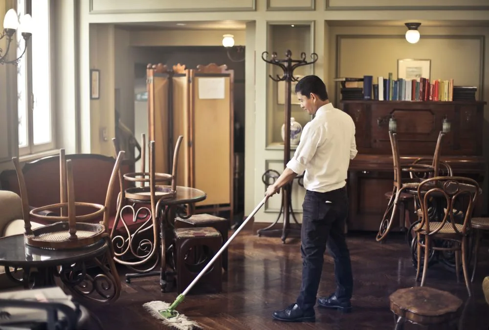

April 5, 2026
The benefits of day porter services for high-traffic buildings
Seven ways on-site daytime coverage pays off for your NYC facility.
Read article
By the Ecco Facilities team · February 28, 2026
Your facility needs to be clean. That's not the question. The question is: how should that happen? Should you hire someone to deep-clean after hours? Or should you have someone on-site during business hours handling real-time maintenance? Or both? Here's how to decide.
Janitorial services are comprehensive facility cleaning that typically happens outside business hours. The crew arrives after your employees leave and handles all the work that needs to be done when the space is empty: carpet cleaning, floor waxing, deep cleaning of restrooms, trash removal, and detailed work that requires time and access to empty areas.
Janitorial services usually happen on a fixed schedule, often at night or on weekends. They're built around completing a comprehensive cleaning checklist across your entire facility. They're scheduled, predictable, and thorough. (At Ecco, this is what we call commercial cleaning.)
Day porter services are different. A day porter (or daytime porter) is on-site while your facility is operating. They're responding in real-time to what's happening: cleaning up spills immediately, restocking restrooms throughout the day, vacuuming high-traffic areas, wiping down common surfaces, and handling the small maintenance issues that emerge during business hours.
Day porter services are reactive and responsive. They're about keeping your space looking clean and maintained while people are actually using it. They notice when something's wrong and address it on the spot. Learn more about how day porter coverage works.
Here's the fundamental difference. Janitorial is scheduled work: you know exactly when it happens, what gets cleaned, and the crew has hours to complete a comprehensive job. Day porter is responsive work; it happens in real-time as issues emerge during the business day.
Janitorial handles the deep work. Day porter handles the daily maintenance. Both have value, but they solve different problems.
If your facility has low traffic and minimal activity during business hours (say, a small office with five people) you might get away with janitorial alone. A recurring after-hours clean handles everything.
If your facility has high traffic, lots of foot flow, visible activity during business hours, and an emphasis on appearance (a retail space, a professional office, a medical facility) you need daytime maintenance. Waiting until night to address spills and mess means your space looks neglected during the hours when it matters.
If you have both high traffic AND need comprehensive deep cleaning, you need both services working together. The day porter keeps things pristine during business hours. The janitorial team handles the comprehensive work at night.
The best facility management strategy combines both services. During the day, your day porter is maintaining the space: cleaning restrooms, picking up mess, responding to immediate issues. At night, the janitorial team comes in and handles the deep work that requires empty spaces: stripping and waxing floors, deep cleaning carpets, comprehensive bathroom deep clean, detailed work on every surface.
The day porter prevents the space from deteriorating during business hours. The janitorial team ensures it actually gets comprehensively cleaned. Together, they maintain a facility that looks and functions properly all the time.
Start by asking: what does your facility look like during peak business hours? Are people noticing mess? Are restrooms staying clean? Are floors staying presentable? If the answer is no to any of these, you need day porter. If you're managing okay during the day but you want a comprehensive deep clean, you need janitorial. If you want your facility to be impeccable all the time, you need both.
The right service depends on your specific facility. But the best decision is almost always a combination: responsive daily maintenance paired with comprehensive periodic deep cleaning. That's what keeps a facility looking and feeling like it's truly well-maintained.
Keep reading
April 5, 2026
Seven ways on-site daytime coverage pays off for your NYC facility.
Read article
April 4, 2026
Daily, weekly, monthly, and quarterly: the tasks that keep a NYC office healthy.
Read articleApril 5, 2026
The eight things worth evaluating before you sign a contract.
Read articleNot sure which?
Tell us how your building runs and we'll recommend the right mix: day porter, commercial cleaning, or both, with a clear proposal.